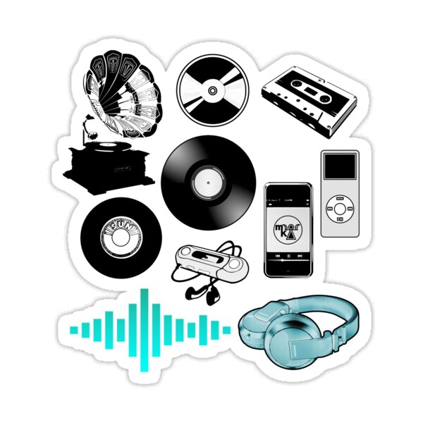
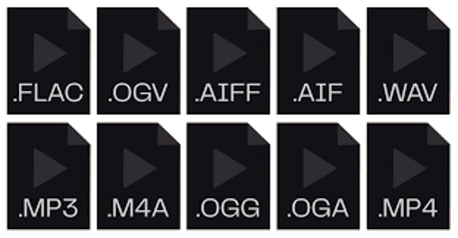
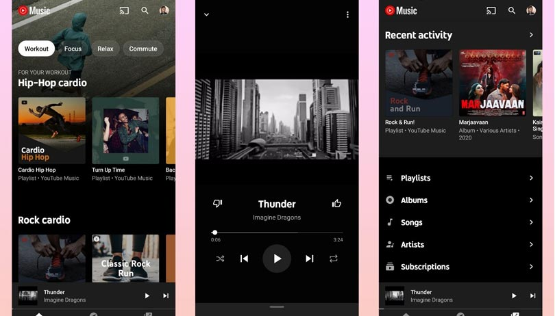

Los reproductores de música son dispositivos electrónicos o aplicaciones de software que permiten a los usuarios escuchar música. Estos dispositivos pueden variar desde reproductores de música portátiles dedicados, como iPods y reproductores de MP3, hasta aplicaciones de software que se ejecutan en teléfonos inteligentes, tabletas y computadoras.

Los reproductores de música están diseñados para reproducir archivos de música digital en varios formatos, como MP3, AAC, FLAC, entre otros. También pueden tener características adicionales, como la capacidad de crear listas de reproducción, mostrar letras de canciones, mostrar imágenes del álbum y permitir a los usuarios organizar su biblioteca de música.

Con el avance de la tecnología, muchas personas ahora utilizan aplicaciones de reproductores de música en sus dispositivos móviles para escuchar música en cualquier momento y en cualquier lugar, ya sea en línea a través de servicios de transmisión de música o mediante la reproducción de archivos de música almacenados localmente en el dispositivo. Estos reproductores de música han revolucionado la forma en que las personas consumen música, brindando una experiencia conveniente y personalizada para los amantes de la música.

La historia de los reproductores de música se remonta a los primeros dispositivos mecánicos que podían reproducir sonido grabado. El primer reproductor de música conocido fue el fonógrafo, inventado por Thomas Edison en 1877. El fonógrafo utilizaba una aguja para grabar vibraciones acústicas en un cilindro de cera. Cuando la aguja se movía sobre el cilindro, reproducía el sonido grabado.
En 1887, Emile Berliner inventó el gramófono, que utilizaba un disco plano en lugar de un cilindro. El gramófono era más fácil de fabricar y de transportar que el fonógrafo, y rápidamente se convirtió en el reproductor de música más popular.
En 1948, la compañía Columbia Records introdujo el disco de vinilo, que ofrecía una calidad de sonido superior a la del gramófono. El disco de vinilo se convirtió en el estándar de la industria de la música durante décadas.
En 1979, Sony introdujo el Walkman, el primer reproductor de música portátil. El Walkman permitió a las personas escuchar música en cualquier lugar, lo que revolucionó la forma en que las personas disfrutaban de la música.
En 1982, Philips introdujo el CD, que ofrecía una calidad de sonido aún superior a la del disco de vinilo. El CD rápidamente se convirtió en el nuevo estándar de la industria de la música.
En 1998, Apple introdujo el iPod, el primer reproductor de música digital. El iPod permitía a las personas almacenar miles de canciones en un dispositivo pequeño y portátil. El iPod fue un éxito comercial y ayudó a popularizar la música digital.
En 2007, Apple introdujo el iPhone, que incluía un reproductor de música digital. El iPhone se convirtió en el dispositivo móvil más popular del mundo, y su reproductor de música es una de sus funciones más populares.
En la actualidad, los reproductores de música digitales son los más populares. Los dispositivos como el iPhone, el iPod, el iPad y los teléfonos inteligentes Android permiten a las personas escuchar música en cualquier lugar y en cualquier momento.
| Año | Evento |
|---|---|
| 1877 | Thomas Edison inventa el fonógrafo. |
| 1887 | Emile Berliner inventa el gramófono. |
| 1948 | Columbia Records introduce el disco de vinilo. |
| 1979 | Sony introduce el Walkman. |
| 1982 | Philips introduce el CD. |
| 1998 | Apple introduce el iPod. |
| 2007 | Apple introduce el iPhone. |
Reproductor de música completo y con funciones avanzadas.
Reproductor de música sencillo y fácil de usar.
Reproductor de música potente y personalizable.
Reproductor de música elegante y minimalista.
Reproductor de música potente y con funciones avanzadas.
Reproductor de música completo y personalizable.
Reproductor de música minimalista y con funciones avanzadas.
Reproductor multimedia versátil que también puede reproducir música.
Reproductor de música potente y personalizable.
Reproductor de música clásico que sigue siendo popular.